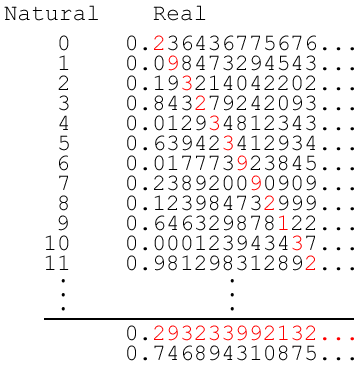

Let me begin with disclaiming that this won’t be exactly a review of the books, but a refuge in which I deposit my thoughts and discoveries, however amateur, pertinent to the mathematical (and by extension, philosophical and theological) concepts of zero and infinity.
Actually, since the contents of these two texts are so similar in context yet so contrasting in style and intention — Zero is biography; a historical rundown, while Infinity is a somewhat technical guide — I find unworkable an orderly categorisation of chapters in this book review, as the disarray of information would throw just about anybody off. Instead, I’ll simply list and elaborate on interesting pieces I learnt from the books, each point potentially having contributions from one or both texts, supplemented by my own sentiments and opinions. (Update: I ended up with just three. Oopsie.)
Mathematics ties in deeply with religion and theology; perhaps too deeply. A stupid amount of time has been spent exploring and analysing the complex relationship between mathematical inquiry and theological wisdom, especially during the early ages in ancient Greece, Rome, Egypt and India. Back when religious faith was inseparable from intellectual pursuit, it acted as a major motivator governing the directions in which these thinkers set out, demarcating boundaries past which the accuracy of traditional religious teachings might be threatened. Primely, Aristotle postulated that mathematicians “do not need the infinite, or use it,” impelled by his rejection of the prospect of anything being greater than the heavens, and because his system implied (or rather, sustained the plausibility of) the existence of God, this philosophy endured. With that consequently came his rejection of the infinitesimal. Curiously, he also denied the existence of the void, as “nature abhorred a vacuum”. As many then pointed out, this pair of rejections was internally inconsistent, as a universe finite in time and history must have begun somewhere, before when only the void existed.
This sort of debate now seems archaic to us, having been brought up with a general acceptance of the concepts of zero and infinity, despite never tangibly seeing any. To them though, in a society that’d always begun counting from 1, it was only natural to feel queasy with zero, or an infinity that breaks usual mathematics. Beyond the absurdity of theological ties to scientific inquiry, I am further intrigued by the implications on past human psychology, and its parallels to and subtle nuances from that we have now. Rejecting zero and/or the infinite came instinctively, because people found it easier to stick to what their current values demanded. To be clear, the Greeks weren’t exactly wrong about these contentious subjects — what more philosophically do we today know to prove otherwise? Plato’s Theory of Forms claims the highest kind of reality consists of abstract forms, or ideas, and the material world is an imperfect image of the ideal one. Sounds weird, and heavily criticised, but in this particular context it about perfectly sums up the delicate inconsistency with which we treat the mathematical infinity and void in modern times. We don’t see it, we don’t feel it, but we use it everywhere in mathematics, science and engineering to solve problems in the real environment we can touch. This is even arguably consistent with Aristotle’s claim that we don’t need infinity, though “potential infinity” can exist in our minds. The contrast with those much before us is inadvertently caused by the difference in scientific advancement and norms between the eras: they never had a 0 in their number system, and never utilised calculus. It would be odd if they instead were willing to accept what comes naturally to us today. In the 21st century, “our minds seem to require the idea that things might go on ‘forever’ — in space and in time, in the future and the past. Infinity is, perhaps, a mental default, a natural side effect of the pattern-seeking abilities of our minds.” (Ian Stewart, Infinity: A Very Short Introduction)
There are infinities of different sizes. Yeah, there it is. This point is going to be technical and if you aren’t into that, or already knew this, you might want to skip it.
Cardinality in mathematics is a measure of the size of a set. To find the cardinality of a finite set, we can count the number of elements it contains. To determine the cardinality of an infinity, however, is a little trickier. Its cardinality isn’t a number, because neither is infinity — to make some meaning of cardinality, or size of the infinity if you will, we categorize them into different types. The two general (of infinitely many) types of infinity are the countable, or listable, and the uncountable or unlistable. If it’s impossible to literally count a set’s elements, we instead compare separate sets and try to map elements between them, and see if bijection occurs. If every element of A corresponds one-to-one to some element of B, sets A and B have the same cardinality.
This means that there are as many numbers between 0 and 1 as there are between 0 and 2, as there are between 0 and a thousand. Let A be the set of all numbers from 0 to 1, and B be the set of all numbers from 0 to 2. Simply multiply each element of A by 2 to find its corresponding element in B, and vice versa. Magically, A and B are of equal cardinality. They are both countably infinite.
It also means that somehow there are more numbers between 0 and 1 than there are whole numbers. Let R be the set of all real numbers from 0 to 1, and let N be the set of all natural numbers {0, 1, 2, 3, 4…}. There is no way of bijection between R and N. Let’s proceed by proof of contradiction, using Cantor’s diagonalization: Suppose there is a bijection. Write a mapping table like below:
Since we assumed bijection is possible, the mapping should be comprehensive. But observe the red diagonal line: if we take the xth digit of the xth number for every x in N, we get a number (from the image above, 0.293233992132…). Then if we change every digit of this number, we get a brand new number (0.746894310875…) in set R that cannot map to any natural number in set N, because its xth place is different from the xth real number in the list. Hence the contradiction, and proof that our assumption that sets R and N biject. Set R is uncountably infinite, which is (infinitely) larger than set N.
Two videos I found to explain this same concept clearly and entertainingly:
Undefined Behavior, with pokemons
Veritasium, with the Hilbert Hotel
Among the uncountably infinite are discrete tiers as well. The Hebrew symbol aleph is commonly used to represent these cardinalities, coupled with a subscript denoting the tier. Aleph-0 represents the countably infinite, such as the whole numbers.
Pythagoras was a weirdo. Of course, he had a brilliant mind, and was an inspirational teacher of many. He was also a freakish cult leader who believed that beans contained the souls of the dead. He allegedly killed Hippasus of Metapontum for revealing the truth about irrational numbers Pythagoras wanted badly to keep secret. His loyal followers kept to strange rules and worshipped him like God himself. Ego, insecurity, mixed with murderous intent. And yet the wildest of all to me, he totally didn’t come up with what’s today known as the Pythagorean Theorem — the Indians invented it at least hundreds of years prior!
This was a pointless piece of information, but I thought I’d close it off with something funny. Did it work?
Thanks for reading.